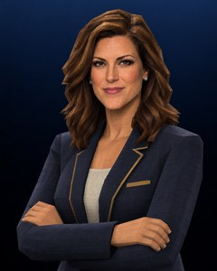

Derek Voss
Play-by-play

Renee Castellan
Analyst
Voss
This page tracks the national landscape against our own preseason preview — a new section each time there's something real to measure it against, not a running commentary on every game.
Castellan
And three weeks in, we've had to eat a lot more than just some words.
SEGMENT 01
Weeks 0-1 Around The Country
ON SCREEN: SPOTLIGHT RESULTS, WEEKS 0-1
| Wk | Winner | Loser | Score |
|---|---|---|---|
| 0 | Stanford | #1 Notre Dame | 45-35 |
| 0 | Colorado | #12 Nebraska | 41-27 |
| 0 | Michigan St. | #11 Oregon | 14-9 |
| 0 | USF | #17 UCF | 31-26 |
| 1 | Auburn | #6 Texas A&M | 33-27 (OT) |
| 1 | Oklahoma St. | #18 Oklahoma | 45-28 |
| 1 | Ohio | #11 Notre Dame | 31-21 |
| 1 | Georgia | #17 Georgia Tech | 31-28 |
Voss
We can't let this go another section without saying it, Renee — Notre Dame opened the season No. 1, perfectly balanced across the board, and they're 0-2.
Castellan
Stanford got them in Week 0, then Ohio got them in Week 1, after they'd already fallen to No. 11 in the poll. That's not one bad week, that's back-to-back losses to open the year for the team we called dead-even with no obvious weakness in the preview. The weakness was apparently everywhere at once.
Voss
And Oregon, who we flagged for that huge defense-light, 95-point-offense profile at No. 12, lost to Michigan State in a 14-9 defensive slugfest the week before.
Castellan
That's almost the inverse failure mode — a team built to win shootouts getting strangled in one instead. Different problem, same result: another ranked team gone in the opening weeks.
Voss
On the storylines we're actually tracking — Auburn needed overtime to beat a ranked Texas A&M team at home in Week 1.
Castellan
Which actually cuts the other way for Hugh Freeze, at least for one week — a win over a ranked opponent is a win, OT or not, and that's exactly the kind of result that buys a hot-seat coach a little room to breathe. Ask us again in October whether it mattered.
Voss
And Georgia survived Georgia Tech by three in Week 1.
Castellan
A win's a win, but a three-point margin over an in-state rival isn't the kind of statement that quiets questions about a roster that's been bleeding transfers for three straight years. Two weeks in, that story's not settled either way.
SEGMENT 02
Week 2 Around The Country
ON SCREEN: SPOTLIGHT RESULTS, WEEK 2
| Wk | Winner | Loser | Score |
|---|---|---|---|
| 2 | SMU | Notre Dame | 38-31 |
| 2 | #13 Texas | #2 Alabama | 31-28 |
| 2 | #1 Ole Miss | #19 Oregon | 38-31 |
| 2 | #7 Penn St. | #15 USC | 25-11 |
| 2 | #25 Oklahoma St. | #18 Arizona St. | 49-35 |
Voss
Notre Dame's 0-3 now, Renee. SMU got them in Week 2, and they've fallen all the way out of the rankings. The preseason No. 1 is unranked three games into the season.
Castellan
That's not a slow start anymore, that's a full-blown crisis. Three losses to open the year for a team we had dead-even with no weaknesses. Whatever we missed in the preview, we missed it everywhere.
Voss
And it's not just Notre Dame. Preseason No. 2 Alabama just lost to No. 13 Texas.
Castellan
A loss for a team we had picked near the very top of the country, but at least an explainable one — a ranked loss to a quality Texas team. Not the kind of result that should rewrite the whole preseason picture on its own.
Voss
Oregon's second loss looked nothing like the first. Week 0 was a 9-14 defensive slugfest against Michigan State. Week 2 was a 38-31 shootout loss to No. 1 Ole Miss.
Castellan
Two completely different ways to lose a football game, same result both times. That's not one bad matchup, that's a team that hasn't found an identity that travels.
SEGMENT 03
Week 3 Around The Country: Grading Our Own Picks
ON SCREEN: SPOTLIGHT RESULTS, WEEK 3
| Wk | Winner | Loser | Score |
|---|---|---|---|
| 3 | Oklahoma | #15 Tennessee | 31-19 |
| 3 | Boise State | #10 Alabama | 38-31 |
| 3 | #4 Miami | #23 Georgia Tech | 41-24 |
| 3 | #17 Wisconsin | #3 Michigan | 35-30 |
| 3 | #2 UNC | #19 California | 44-21 |
| 3 | #14 Texas A&M | #8 Texas Tech | 49-35 |
| 3 | UCLA | #9 Ohio State | 35-21 |
Voss
Results are in, and it was an absolute bloodbath for favorites. Let's grade our own picks. Tennessee-Oklahoma first — I had Oklahoma bouncing back, and they did it, 31-19.
Castellan
One for you. I took Tennessee off actual bowl pedigree, but an unranked team that had just been humbled by its own conference clearly had more to prove. Credit where it's due.
Voss
We agreed on Alabama over Boise State. We were both wrong — Boise State won outright, 38-31. That's back-to-back ranked losses for Alabama, Texas in Week 2, now Boise State in Week 3.
Castellan
That one stings for both of us. A preseason No. 2 team is now 0-2 against the only two ranked-or-noteworthy opponents it's actually played. This isn't a résumé problem anymore, it's a results problem.
Voss
Miami handled Georgia Tech exactly like we both expected, 41-24.
Castellan
The one game all week that went to form.
Voss
Now the one that actually hurts — I had Michigan over Wisconsin, and Wisconsin won it, 35-30. You called that one, Renee.
Castellan
The coaching-staff wildcard I flagged showed up for Michigan, not Wisconsin. A #3 team just lost to a program that's topped out around #23-25 the last two years. That's the result of the week.
Voss
UNC took care of business against California, 44-21, so we're both right there.
Castellan
Though I'll remind you I said I was less comfortable with that pick than you were. A dominant final score doesn't erase that a defending runner-up against a lesser opponent is exactly the letdown-game profile — it just didn't happen this week.
Voss
Texas Tech-A&M is the one you nailed and I didn't. A&M won 49-35.
Castellan
Called it. Tech's résumé is spotless against everyone except Ole Miss specifically, and Ole Miss wasn't the opponent this time — but A&M clearly took care of its own business regardless.
Voss
And the last one — I'll take this win. UCLA over Ohio State, 35-21. UCLA's up to #13 in the country off that result, after starting the week unranked entirely.
Castellan
From unranked to #13 in one Saturday. That's the single biggest stock jump we've tracked all season — and Ohio State's first ranked loss of the year.
Voss
Final tally on the slate: 4-3 for each of us. A coin flip of a week, which feels about right given how many favorites went down.
Castellan
The headline isn't our record, it's the slate itself. Alabama, Michigan, Texas Tech, and Ohio State all lost as ranked or marquee favorites, plus Tennessee going down to an unranked team. Nobody's safe right now.
SEGMENT 04
Week 4's Spotlight Games: Previews & Predictions
ON SCREEN: THIS WEEK'S SPOTLIGHT MATCHUPS
| Wk | Matchup |
|---|---|
| 4 | #25 SMU vs. #23 California |
| 4 | #6 LSU vs. #10 Auburn |
| 4 | Washington vs. #16 Ohio State |
| 4 | #18 Georgia vs. #7 Texas |
| 4 | Colorado vs. #17 Oklahoma State |
| 4 | Kentucky vs. #20 Oklahoma |
| 4 | #13 UCLA vs. #15 Nebraska |
Voss
Seven more spotlight games this week, and after a 4-3 split last week, let's see if either of us can separate. SMU and California first.
Castellan
Easy lean for me. Three straight bowl wins for California the last three tracked seasons, including a 59-28 blowout in the Independence Bowl. SMU's recruiting class has been outside the Top 25 for multiple cycles now. California, and not cautiously.
Voss
Can't argue. California for me too.
Voss
LSU and Auburn. LSU's carrying the No. 2 recruiting class in the country right now.
Castellan
The talent gap alone should be enough, but LSU's also been here before at a higher level — a one-possession CFP semifinal loss to Georgia two years ago. Auburn's still working through a bowl loss to a UCLA team that's suddenly very relevant again. LSU.
Voss
Agreed, LSU.
Voss
Washington and Ohio State. Ohio State's coming off that UCLA loss we just finished dissecting.
Castellan
One bad week doesn't erase the gap with an unranked Washington team that lost its last tracked bowl game by three touchdowns to Florida State. I'm not overreacting to a single result. Ohio State.
Voss
I'll go the other way. Back-to-back disappointing bowl results of their own before that ReliaQuest Bowl win, and now a bad loss to an unranked team — I think Washington's the sneaky upset pick here. Washington for me.
Voss
Georgia and Texas — this has rematch energy written all over it.
Castellan
Texas beat Georgia 54-14 in the national title game two years ago, and the recruiting gap has only widened since — Texas is sitting at No. 4 nationally, Georgia's all the way down at No. 17. I don't see the formula changing. Texas.
Voss
Texas for me too. Georgia's a perennial semifinalist, but this specific matchup has been a mismatch before.
Voss
Colorado and Oklahoma State. Interesting one — Oklahoma State's coach has climbed every single year since he took over: 4-8, then 7-5, then 10-3 with a bowl win last year.
Castellan
That trajectory is the whole story for me. Colorado's been a bowl also-ran two years running, losing both by a wide margin. Oklahoma State, to keep climbing.
Voss
Same. Oklahoma State.
Voss
Kentucky and Oklahoma. Both programs mid-rebuild under new coaches.
Castellan
Oklahoma's still unwinding its coaching change, but even an uneven stretch has produced real winning seasons. Kentucky fired its entire staff and is still finding its footing under the new hire. I'll take Oklahoma off the better recent track record, with the caveat that neither team's been consistent.
Voss
Oklahoma for me as well.
Voss
Last one — UCLA, fresh off the biggest result of the whole season, against Nebraska.
Castellan
I respect the moment UCLA just had, but jumping from unranked to #13 in a single week off one result is exactly the kind of thing that invites a letdown the following week — and Nebraska just won its own bowl game last tracked season. I'm fading the hot streak. Nebraska.
Voss
I'm staying with the hot hand. UCLA's quarterback has had real Heisman-watchlist buzz the last few years, and a team playing with this much confidence right after upsetting a top-10 opponent is hard to pick against. UCLA for me.
SEGMENT 05
Checking The Heisman Board
Voss
Quick check on the preseason Heisman board. Kevin Washington's offense is 0-3 now, and the context around that just got worse — a preseason No. 1 that's fallen out of the rankings entirely.
Castellan
That's about as rough a backdrop as a Heisman campaign can have. A watchlist player on an unranked, winless team is not part of this conversation much longer if that doesn't turn around fast.